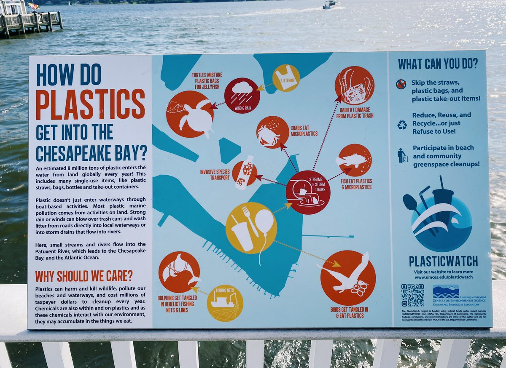
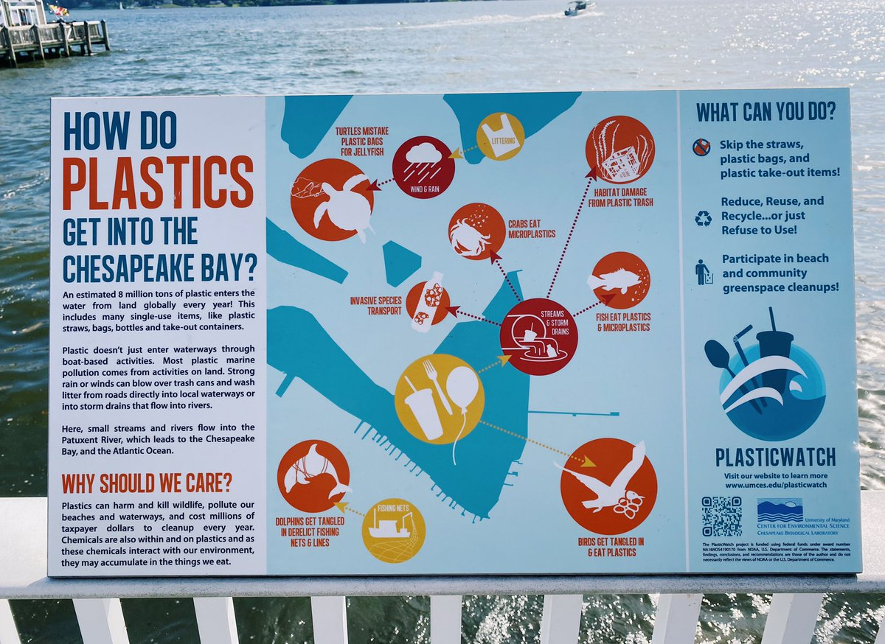

knitr::include_graphics("7F259009-BD11-47D9-8DE5-60E40B50B84E.jpeg")
Sammi, Neha, Lasya, Sriya, Chayanika
<<<<<<< HEAD <<<<<<< HEAD What are the effects of the plastic bag ban on microplastic pollution in the Chesapeake Bay?
=======
knitr::include_graphics("7F259009-BD11-47D9-8DE5-60E40B50B84E.jpeg")
What are the effects of the plastic bag ban on microplastic pollution in the Chesapeake Bay? >>>>>>> 8c0ca2b6ffc921f309d8c2a4918a3349beec47bc
How does emissions from battery recycling plants impact water pollution in the Chesapeake Bay?
Outcome variable
Our outcome variable is water quality from each county adjacent to the Chesapeake Bay. Specific water parameters that we are interested in include total nitrogen, total carbon, and total organic nitrogen.
This data is obtained from https://datahub.chesapeakebay.net which reports water quality from each county each day.
install.packages("tidyverse")
install.packages("terra")
install.packages("simplermarkdown")
install.packages("ggplot2")
library("tidyverse")
library("terra")
library("simplermarkdown")
library("ggplot2")
df<- read.csv("WaterQualityFIPS.csv") %>%
rename(fips=FIPS)
fips<-read.csv("state_and_county_fips_master.csv")
dfcounty<-merge(df, fips, by="fips", all.x=TRUE) %>%
mutate(SampleDate=as.Date(SampleDate, format='%m/%d/%Y')) %>%
mutate(Month=month(SampleDate), Year=year(SampleDate)) %>%
group_by(Parameter, Unit, fips, name, state, Month, Year) %>%
summarize(MeasureValue=mean(MeasureValue))
head(dfcounty)# A tibble: 6 × 8
# Groups: Parameter, Unit, fips, name, state, Month [1]
Parameter Unit fips name state Month Year MeasureValue
<chr> <chr> <int> <chr> <chr> <dbl> <dbl> <dbl>
1 PIC MG/L 24003 Anne Arundel County MD 1 2012 0.03
2 PIC MG/L 24003 Anne Arundel County MD 1 2013 0.03
3 PIC MG/L 24003 Anne Arundel County MD 1 2014 0.03
4 PIC MG/L 24003 Anne Arundel County MD 1 2017 0.114
5 PIC MG/L 24003 Anne Arundel County MD 1 2018 0.03
6 PIC MG/L 24003 Anne Arundel County MD 1 2020 0.03 #graph codeTreatment variable
Our treatment variable is an indicator of whether there is a plastic bag ban or tax in each county. This data set came from https://www.bagtheban.com/in-your-state/.
library("tidyverse")
library("terra")
library("simplermarkdown")
df2<- read.csv("PlasticBagLegislation.csv") %>%
rename(name=Location) %>%
rename(state=State) %>%
mutate(state=ifelse(state=="Maryland", "MD", "VA")) %>%
mutate(monthBan=ifelse(Ban==1, Month, "N/A")) %>%
mutate(yearBan=ifelse(Ban==1, Year, "N/A")) %>%
mutate(monthTax=ifelse(Tax==1, Month, "N/A")) %>%
mutate(yearTax=ifelse(Tax==1, Year, "N/A"))Control variables
cmd<-vect("Shapefiles/tl_2020_24_county10.shp")
cva<-vect("Shapefiles/tl_2020_51_county10.shp")
r<-rast("201001.nc4")
rp<-project(r[[1]], crs(cmd))
plot(rp)
plot(cmd, add=TRUE)
plot(cva, add=TRUE)To take into account total precipitation and average storm-water runoff data we used data from NASA Earth Data. Our data came from GLDAS Noah Land Surface Model.
<<<<<<< HEAD >>>>>>> fd548f17025832967e31fc760cb03b2394052205
=======
Display a figure showing how the treatment variable impacted the outcome variable. >>>>>>> 8c0ca2b6ffc921f309d8c2a4918a3349beec47bc